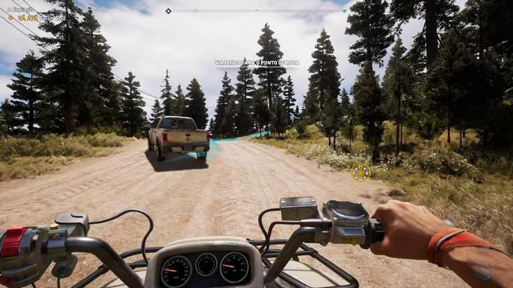

Liberate Hope County and fight against a dangerous cult in a massive open world adventure.
4.8 / 5
Open World
Hope County, Montana
Driving, Flying, Combat
Far Cry 5 takes place in Hope County, Montana, where players battle a dangerous doomsday cult. Explore the world freely, complete missions and build your resistance.
OS: Windows 7/10 (64-bit)
CPU: Intel Core i5-2400
RAM: 8 GB
GPU: GTX 670
Storage: 40 GB
OS: Windows 10/11 (64-bit)
CPU: Intel Core i7-4770
RAM: 8 GB
GPU: GTX 970
Storage: 40 GB SSD
